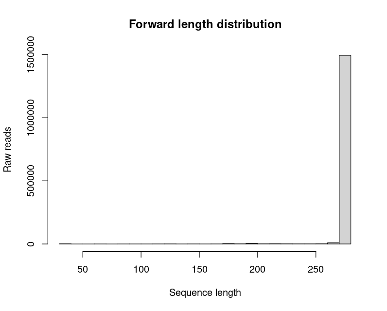
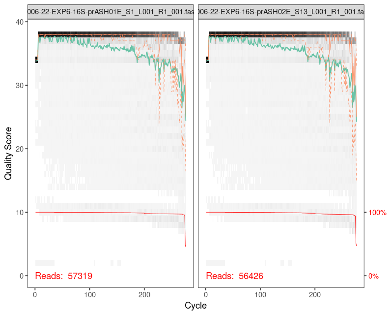
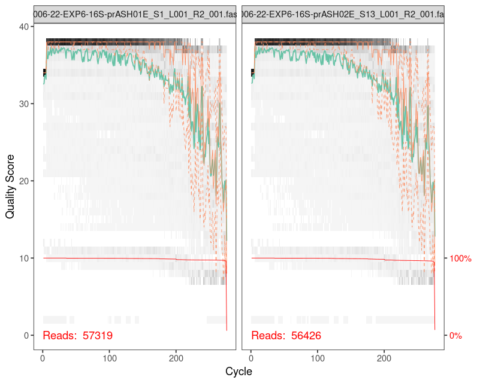
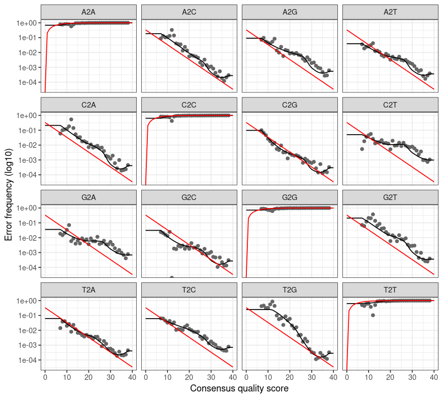
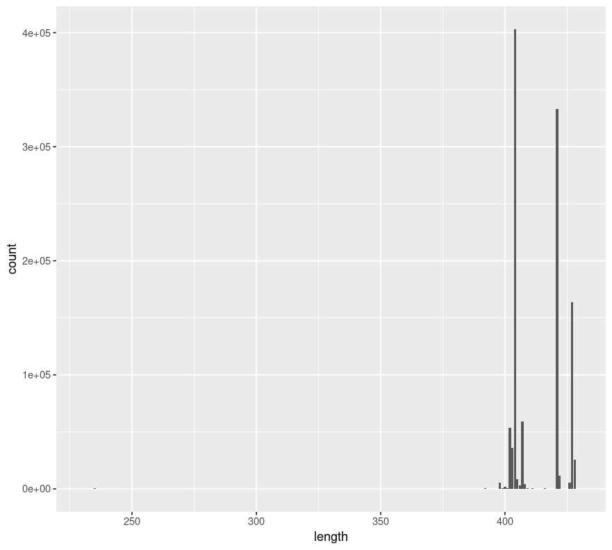

Scripts para el procesamiento de secuencias de amplicones del gen procariota 16S rRNA
Hasta la fecha, el gold standard en los trabajos de metataxonomía o metabarcoding procariota es el gen 16S rRNA, siendo las regiones hipervaribales V4-V5 y V3-V4 unas de las más estudiadas. Es por ello que, las siguientes líneas de código están destinadas al procesamiento de lecturas obtenidas mediante tecnología de secuenciación masiva Illumina MiSeq.
En concreto, los scripts planteados han sido puestos a punto y verificados en una servidor Linux (distribución Ubuntu), con 96 cores y 500 MB de memoria RAM. Se ha empleado el lenguaje de programación R, con ciertas llamadas al lenguaje del sistema.
En este protocolo, se trabaja con muestras a las que ya se ha realizado el paso de demultiplexing, con archivos de tipo fastq, y con lecturas a las que se le han eliminado los adaptadores empleados durante la secuenciación. Se trata de una secuenciación de tipo paired-end, 2 X 275 pb (Illumina MiSeq), donde los archivos fastq contienen lecturas Forward y Reverse en el orden correspondiente. En el run de secuenciación se incluyen tres réplicas correspondientes a la Mock Community “ZymoBIOMICS Microbial Community Standard II (ZYMO Research)”. Los primers empleados en este caso son Pro341F and Pro805R1 que amplifican las regiones hipervariables V3-V4 procariotas. Se han empleado como ejemplo muestras de endosfera radicular de 12 individuos de Pinus sylvestris.
Los datos de ejemplo han sido tomados de este proyecto, y han sido previamente publicados2.
La mayoría de este protocolo emplea funciones del paquete DADA2 desarrollado por Callahan y cols.3
0. Preparación del entorno de trabajo
#cargamos los paquetes necesarios
library(devtools)
library(micro4all)
library(dada2)
library(ShortRead)
library(ggplot2)
library(tidyverse)
library(phyloseq)
library(seqinr)
library(annotate)
library(Biostrings)
library(GUniFrac)
library(phangorn)
library(vegan)
library(pheatmap)
library(colorspace)
# Establecemos el directorio de trabajo
setwd("~/Bacteria/")
# Determinamos la ruta de los datos brutos
path = "~/Bacteria/raw_data/"
list.files(path)Nos devuelve como resultado (por brevedad, mostramos solo las primeras líneas):
"NGS006-22-EXP6-16S-MOCK-1_S194_L001_R1_001.fastq.gz"
"NGS006-22-EXP6-16S-MOCK-1_S194_L001_R2_001.fastq.gz"
"NGS006-22-EXP6-16S-MOCK-2_S195_L001_R1_001.fastq.gz"
"NGS006-22-EXP6-16S-MOCK-2_S195_L001_R2_001.fastq.gz"
"NGS006-22-EXP6-16S-MOCK-3_S196_L001_R1_001.fastq.gz"
"NGS006-22-EXP6-16S-MOCK-3_S196_L001_R2_001.fastq.gz"
"NGS006-22-EXP6-16S-prASH01E_S1_L001_R1_001.fastq.gz"
"NGS006-22-EXP6-16S-prASH01E_S1_L001_R2_001.fastq.gz"
"NGS006-22-EXP6-16S-prASH02E_S13_L001_R1_001.fastq.gz"
"NGS006-22-EXP6-16S-prASH02E_S13_L001_R2_001.fastq.gz"
"NGS006-22-EXP6-16S-prASH03E_S25_L001_R1_001.fastq.gz"
"NGS006-22-EXP6-16S-prASH03E_S25_L001_R2_001.fastq.gz"
"NGS006-22-EXP6-16S-prASH04E_S37_L001_R1_001.fastq.gz"
"NGS006-22-EXP6-16S-prASH04E_S37_L001_R2_001.fastq.gz"
"NGS006-22-EXP6-16S-prASH05E_S49_L001_R1_001.fastq.gz"
"NGS006-22-EXP6-16S-prASH05E_S49_L001_R2_001.fastq.gz"
"NGS006-22-EXP6-16S-prASH06E_S61_L001_R1_001.fastq.gz"
"NGS006-22-EXP6-16S-prASH06E_S61_L001_R2_001.fastq.gz"
"NGS006-22-EXP6-16S-prASH07E_S73_L001_R1_001.fastq.gz"
"NGS006-22-EXP6-16S-prASH07E_S73_L001_R2_001.fastq.gz"
"NGS006-22-EXP6-16S-prASH08E_S85_L001_R1_001.fastq.gz"
"NGS006-22-EXP6-16S-prASH08E_S85_L001_R2_001.fastq.gz"
"NGS006-22-EXP6-16S-prASH09E_S2_L001_R1_001.fastq.gz"
"NGS006-22-EXP6-16S-prASH09E_S2_L001_R2_001.fastq.gz"
"NGS006-22-EXP6-16S-prASH10E_S14_L001_R1_001.fastq.gz"
"NGS006-22-EXP6-16S-prASH10E_S14_L001_R2_001.fastq.gz"
"NGS006-22-EXP6-16S-prASH11E_S26_L001_R1_001.fastq.gz"
"NGS006-22-EXP6-16S-prASH11E_S26_L001_R2_001.fastq.gz"
"NGS006-22-EXP6-16S-prASH12E_S38_L001_R1_001.fastq.gz"
"NGS006-22-EXP6-16S-prASH12E_S38_L001_R2_001.fastq.gz"
"NGS006-22-EXP6-16S-prNSD01E_S59_L001_R1_001.fastq.gz"
"NGS006-22-EXP6-16S-prNSD01E_S59_L001_R2_001.fastq.gz"Asignamos las lecturas Forward (R1) y las Reverse (R2) a sus respectivas variables, considerando el patrón del nombre de nuestros archivos:
fnFs = sort(list.files(path, pattern="_R1_001.fastq.gz", full.names = TRUE))
fnRs = sort(list.files(path, pattern="_R2_001.fastq.gz", full.names = TRUE))Adaptamos el nombre de las muestras correspondientes a la Mock Community:
sample.names=gsub(pattern = "MOCK-", replacement = "MOCK", x = fnFs)Extraemos el nombre real de las muestras:
sample.names = sapply(strsplit(basename(forwards), "_"), `[`, 1)
sample.names = sapply(strsplit(sample.names, "-"), `[`, 5)
sample.names #comprobamos si el nombre de las muestras es correcto1. Análisis de calidad
Antes de comenzar con el procesamiento de las lecturas, es esencial comprobar la calidad de las mismas, para verificar el éxito de la secuenciación. Existen varias maneras de evaluar la calidad de la secuenciación.
1.a) Conteo del número de secuencias
Si el esfuerzo de secuenciación no ha sido suficiente, es necesario repetir el run. Para ello, podemos evaluar el número de lecturas obtenidas para cada muestra:
raw_reads_count = NULL
for (i in 1:length(fnFs)){
raw_reads_count = rbind(raw_reads_count, length(ShortRead::readFastq(fnFs[i]))) }
rownames(raw_reads_count)= sample.names
colnames(raw_reads_count)= "Number of reads"
raw_reads_count #tambien: View(raw_reads_count)
min(raw_reads_count)
max(raw_reads_count)En este ejemplo, observamos que min(raw_reads_count) nos devuelve [1] 41580 y max(raw_reads_count) nos dice [1] 66885.
Teóricamente, para cada muestra debemos obtener el mismo número de lecturas con el primer Forward y con el primer Reverse. Si deseamos comprobarlo, solo debemos reemplazar la variable fnFs por fnRs en el código anterior.
El número de secuencias admisibles dependerá del tipo de secuenciación realizada (MiSeq, NovaSeq, etc.). En este caso, es suficiente (>41580 reads en todas las muestras).
1.b) Evaluación de la longitud de las secuencias
La estrategia de secuenciación seguida fue de 2 x 275bp en este run, por lo que debemos verificar que la mayoría de las lecturas se encuentran próximas a esta longitud. Lo haremos mediante un recuento de cada longitud detectada, y mediante representación gráfica en un histograma:
# Extraemos las lecturas F
reads = ShortRead::readFastq(fnFs)
uniques = unique(reads@quality@quality@ranges@width)
# Contamos el número de secuencias de cada longitud
counts = NULL
for (i in 1:length(uniques)) {
counts= rbind(counts,length(which(reads@quality@quality@ranges@width==uniques[i])))
}
histogram = cbind(uniques,counts)
colnames(histogram) = c("Seq.length", "counts")
head(histogram[order(histogram[,1],decreasing = TRUE),]) #verificamos que la mayoria de las lecturas son del tamaño deseado
hist(reads@quality@quality@ranges@width, main = "Forward length distribution", xlab="Sequence length", ylab = "Raw reads")En la Figura S1 podemos observar el histograma obtenido. En él apreciamos que la inmensa mayoría de las lecturas tienen un tamaño aproximado de 275 bp.

De hecho, si apreciamos la salida del comando head, vemos que, efectivamente, la mayoría de las lecturas tienen 274-276bp:
Seq.length counts
[1,] 276 1075934
[2,] 275 67989
[3,] 274 342449
[4,] 273 6545
[5,] 272 724
[6,] 271 3381.c) Plots de calidad
La mejor manera para conocer la calidad de las lecturas es representar los gráficos de calidad Q-score frente a la longitud de las secuencias, gracias a una función específica del paquete dada2:
plotQualityProfile(fnFs[4:5]) #seleccionamos las muestras que deseemos ver
plotQualityProfile(fnRs[4:5])Las Figuras S2 y S3 nos muestras la “evolución” de la calidad en las lecturas F y R, respectivamente.


INTERPRETACIÓN DEL GRÁFICO:
-heatmap gris: frecuencia de los valores Q en cada posición. Se recomienda que se encuentren próximos a Q30, y que no bajen de Q20 (excepto al final de las lecturas R).
-línea verde: valor medio de calidad Q en cada posición de las lecturas.
-línea naranja: cuartiles de calidad en cada posición.
-línea roja: proporción normalizada de lecturas de cada longitud. Debe referenciarse respecto al eje Y derecho.
Tal y como apreciamos, las lecturas F tienen mayor calidad que las R, y en estas últimas, la calidad decae especialmente al final (aunque casi no baja de Q20). También podemos comprobar que tanto en las lecturas F como en las R, la mayoría de las lecturas son del tamaño esperado.
Es importante evaluar la longitud de las lecturas F y R para estimar si van a poder solapar o no.
¡Cuidado! Si vemos que no demasiadas lecturas alcanzan la longitud deseada, es posible que tengamos problemas para solaparlas. Es por ello que es necesario un buen número de lecturas, de tamaño suficiente y de calidad elevada.
2. Filtrado y recorte de lecturas
2.1 Figaro
Para poder realizar el filtrado y truncar las lecturas en los puntos en los que comienza a bajar la calidad Q de las mismas, es recomendable utilizar la herramienta Figaro. Esta herramientas nos ayudará a seleccionar de forma más precisa los mejores parámetros para truncar las lecturas y entrenar el modelo de machine learning que emplea DADA2.
2.1.1 Pre-corte
Figaro trabaja solamente si todas las secuencias tienen la misma longitud, por lo que, considerando las longitudes de nuestras lecturas, procederemos a realizar un corte inicial. En este ejemplo, truncaremos las lecturas a 274 pb, ya que la mayoría se encontraban en el rango 274-276 pb.
El corte realizado es solamente para que Figaro funcione adecuadamente; es orientativo y para ayudarnos a la toma de decisiones. Sin embargo, posteriormente no trabajaremos sobre estas lecturas truncadas. En síntesis, Figaro es un programa aplicado exclusivamente para la toma de decisiones, exploratorio.
figFs = file.path(path, "figaro", basename(fnFs))
figRs = file.path(path, "figaro", basename(fnRs))
# Trimming a 274 pb
out.figaro = filterAndTrim(fnFs, figFs, fnRs, figRs, compress=TRUE,
multithread=6, truncLen=c(274,274)) #adaptar el numero de hilos conforme la potencia de nuestra maquina2.1.2 Ejecución de Figaro en el sistema
Llamamos a Figaro en el sistema. Procedemos a truncar las lecturas, teniendo en cuenta el tamaño de los primers empleados (17 y 21 pb), y el tamaño del amplicón (426 bp) estimado:
figaro = system(("figaro -i ~/Bacteria/raw_data/figaro -o ~/Bacteria/raw_data/figaro -a 426 -f 17 -r 21"), intern=TRUE)
head(figaro)Observemos las primeras líneas de la salida:
[1] "Forward read length: 274"
[2] "Reverse read length: 274"
[3] "{\"trimPosition\": [268, 216], \"maxExpectedError\": [2, 2], \"readRetentionPercent\": 81.77, \"score\": 79.76848379807731}"
[4] "{\"trimPosition\": [269, 215], \"maxExpectedError\": [2, 2], \"readRetentionPercent\": 81.75, \"score\": 79.75228592485807}"
[5] "{\"trimPosition\": [270, 214], \"maxExpectedError\": [2, 2], \"readRetentionPercent\": 81.74, \"score\": 79.73770783896074}"
[6] "{\"trimPosition\": [266, 218], \"maxExpectedError\": [2, 2], \"readRetentionPercent\": 81.74, \"score\": 79.73527815797786}"Figaro ordena de manera descendente las opciones de truncado de lecturas conforme a la puntuación obtenida. En este ejemplo vemos que no existen grandes diferencias en las puntuaciones con las diferentes posiciones de truncado, y que en estos casos, el porcentaje de secuencias retenidas es bastante elevado. Además, los valores de maxEE no son excesivamente grandes (procurar que sean <=6). Seleccionaremos pues la primera opción: truncLen= 268 (F) 216 (R), maxEE= 2 (F), 2 (R).
2.2. Filtrado y recorte definitivo
Considerando las recomendaciones de Figaro, realizamos el filtrado de las lecturas con la función filterAndTrim del paquete dada2.
filtFs = file.path(path, "filtered", basename(fnFs))
filtRs = file.path(path, "filtered", basename(fnRs))
out = filterAndTrim(fnFs, filtFs, fnRs, filtRs, truncLen=c(268,216),
maxN=0, maxEE=c(2,2), truncQ=2, rm.phix=TRUE,
compress=TRUE, multithread=6, minLen=50) Es interesante revisar los argumentos de la función filterAndTrim para comprender mejor cómo ajustarlos:
-truncLen: indicamos las posiciones en las que queremos truncar las lecturas F y R, respectivamente.
-maxN: número máximo de ambigüedades posibles.
-maxEE: máximo valor de error esperado (expected error). Se calcula así: EE = sum(10^(-Q/10).
-truncQ: trunca las lecturas en el primer nucleótido que aparece con una calidad Q inferior o igual a la indicada. Es decir, todas las lecturas que pasen el filtro tendrán nucleótidos con un valor superior a truncQ.
-rm.phix: si descartar, o no, lecturas pertenecientes al fago phi X174 (empleado en Illumina como control en la secuenciación).
-minLen: longitud mínima de las lecturas.
Ahora que ya comprendemos los parámetros, analizaremos la salida de head(out):
reads.in reads.out
NGS006-22-EXP6-16S-MOCK-1_S194_L001_R1_001.fastq.gz 63548 50983
NGS006-22-EXP6-16S-MOCK-2_S195_L001_R1_001.fastq.gz 64538 51874
NGS006-22-EXP6-16S-MOCK-3_S196_L001_R1_001.fastq.gz 51490 40954
NGS006-22-EXP6-16S-prASH01E_S1_L001_R1_001.fastq.gz 57319 44824
NGS006-22-EXP6-16S-prASH02E_S13_L001_R1_001.fastq.gz 56426 43682
NGS006-22-EXP6-16S-prASH03E_S25_L001_R1_001.fastq.gz 58576 45580Nos informa del número de lecturas iniciales (reads.in) y el número de lectuas que han pasado el filtro (reads.out). Vemos que en todos los casos, el porcentaje de lecturas retenidas se encuentra cerca del 80%, tal y como infirió, aproximadamente, Figaro.
3. Eliminación de primers
Para eliminar todo tipo de secuencias nucleotídicas de origen no biológico, debemos eliminar los cebadores. Para ello, emplearemos la herramienta Cutadapt4.
3.1 Preparación de datos para Cutadapt
En primer lugar, introducimos la secuencia de los primers empleados y calculamos todas sus posibles orientaciones.
FWD = "CCTACGGGNBGCASCAG"
REV = "GACTACNVGGGTATCTAATCC"
# Creamos la funcion para calcular los primers en todas sus orientaciones
allOrients = function(primer) {
require(Biostrings)
dna = DNAString(primer)
orients = c(Forward = dna, Complement = Biostrings::complement(dna),
Reverse = reverse(dna), RevComp = reverseComplement(dna))
return(sapply(orients, toString))
}
#Aplicamos la función a los dos primers
FWD.orients = allOrients(FWD); FWD.orients
REV.orients = allOrients(REV); REV.orientsAhora, revisamos cuántas veces aparece cada primer en las lecturas F y R, en todas su posibles orientaciones:
#Creamos una función para calcular el número de lecturas en las que aparecen los primers
primerHits = function(primer, fn) {
nhits = vcountPattern(primer, sread(readFastq(fn)), fixed = FALSE)
return(sum(nhits > 0))
}
#Le pasamos la función a la muestra que nos interese, en este caso la primera
rbind(FWD.ForwardReads = sapply(FWD.orients, primerHits, fn = filtFs[[1]]),
FWD.ReverseReads = sapply(FWD.orients, primerHits, fn = filtRs[[1]]),
REV.ForwardReads = sapply(REV.orients, primerHits, fn = filtFs[[1]]),
REV.ReverseReads = sapply(REV.orients, primerHits, fn = filtRs[[1]]))En nuestro ejemplo, detectamos estos primers:
Forward Complement Reverse RevComp
FWD.ForwardReads 49775 0 0 0
FWD.ReverseReads 3 0 0 0
REV.ForwardReads 3 0 0 0
REV.ReverseReads 49637 0 0 0# Llamada del programa en nuestro servidor
cutadapt = "/usr/bin/cutadapt"
path.cut = file.path(path, "cutadapt")
if(!dir.exists(path.cut)) dir.create(path.cut)
fnFs.cut = file.path(path.cut, basename(filtFs))
fnRs.cut = file.path(path.cut, basename(filtRs))Cutadapt necesita una serie de etiquetas o flags para funcionar adecuadamente; si quieres conocer más detalles al respecto para poder adaptarlo a tus datos, sigue el tutorial propuesto aquí.
FWD.RC = dada2:::rc(FWD)
REV.RC = dada2:::rc(REV)
# Parámetros de detección de los 2 primers
R1.flags = paste0("-a", " ", "^",FWD,"...", REV.RC)
R2.flags = paste0("-A"," ","^", REV, "...", FWD.RC)3.2 Ejecución de Cutadapt y verificación de resultados
Al fin, ejecutamos el programa sobre nuestras lecturas, con las flags creadas:
for(i in seq_along(fnFs)) {
system2(cutadapt, args = c(R1.flags, R2.flags,
"-n", 2,"-m", 1, "--discard-untrimmed", "-j",6, "-o",
fnFs.cut[i], "-p", fnRs.cut[i], filtFs[i], filtRs[i],
"--report=minimal")) }Con la función primerHits creada anteriormente, verificamos el número de veces que se identifican los primers despúes de eliminarlos:
rbind(FWD.ForwardReads = sapply(FWD.orients, primerHits, fn = fnFs.cut[[1]]),
FWD.ReverseReads = sapply(FWD.orients, primerHits, fn = fnRs.cut[[1]]),
REV.ForwardReads = sapply(REV.orients, primerHits, fn = fnFs.cut[[1]]),
REV.ReverseReads = sapply(REV.orients, primerHits, fn = fnRs.cut[[1]]))En nuestro ejemplo:
Forward Complement Reverse RevComp
FWD.ForwardReads 0 0 0 0
FWD.ReverseReads 0 0 0 0
REV.ForwardReads 0 0 0 0
REV.ReverseReads 0 0 0 0En algunos casos, después de la eliminación de los primers mediante Cutadapt es posible que todavía detectemos alguno con la función primerHits. No debemos asustarnos (siempre y cuando este número no sea excesivamente elevado), pues dicha función y Cutadapt funcionan de forma diferente y pueden detectarse discrepancias.
4. Denoising
Una vez eliminados los primers, debemos realizar el denoising de las muestras, es decir, identificar y corregir los errores introducidos por las plataformas de secuenciación. Se trata de aplicar modelos para diferenciar entre secuencias biológicas reales y aquellas que han acumulado errores.
4.1 Entrenamiento del modelo de errores
Para ello, emplearemos la función learnErrors del paquete dada2. Esta función aprende los errores a partir de tu propio conjunto de datos, alternando la estimación del error y la inferencia de la composición de la muestra, hasta que ambos convergen en una solución única consistente.
errF = learnErrors(fnFs.cut, multithread=6, verbose=1)
errR = learnErrors(fnRs.cut, multithread=6, verbose=1)En runs de baja calidad o muestras problemáticas es posible que no se alcance la convergencia con las iteraciones por defecto. Generalmente esto sucede porque tenemos un exceso de errores o insuficientes bases de calidad para entrener el modelo. Para intenar lograr la convergencia, podemos aumentar el número de iteraciones, y si tampoco es suficiente, aumentar el número de bases a utilizar para entrenar el modelo (por defecto, 10^8). Si aún así tampoco se alcanza la convergencia, es necesario revisar el número de secuencias de que superan el paso de trimming y plantearse si se puede ser más laxo o no con la calidad mínima y el error máximo esperado (para recuperar más secuencias, y por ende, más nucleótidos para poder entrenar adecuadamente el modelo).
En nuestro ejemplo, la convergencia se alcanza en la iteración 6 (F y R).
A continuación, calcularemos y visualizaremos los gráficos de la estimación de los errores (Figura S4).
plotErrors(errF, nominalQ=TRUE)
plotErrors(errR, nominalQ=TRUE)
El tipo de figura obtenida nos indica el progreso de la tasa de error estimada conforme aumenta la calidad Q de las lecturas. La línea roja nos marca la tasa de error prevista según la definición nominal del valor Q, mientras que la línea negra indica la tasa de error estimada tras alcanzar la convergencia del modelo de machine learning. Los círculos negros representar los errores observados en nuestras muestras.
Como podemos apreciar en la Figura S4, conforme aumenta la calidad Q de las lecturas, la tasa de error estimada disminuye para todas las transiciones. Además, podemos apreciar que nuestros valores de error estimado (línea negra) se acercan, relativamente, a la tasa de error observado (puntos negros).
4.2. Inferencia de las muestras
A partir del error aprendido, aplicamos la función dada, que nos devolverá la composición inferida de las muestras considerando el error aprendido.
dadaFs = dada(fnFs.cut, err=errF, multithread=6)
dadaRs = dada(fnRs.cut, err=errR, multithread=6)
names(dadaFs) = sample.names #le damos el nombre de las muestras a las muestras inferidas
names(dadaRs) = sample.names5. Overlapping de lecturas F y R
Ya tenemos lecturas de alta calidad y con errores corregidos, por lo que es el momento de ensamblar las lecturas F y R correspondientes a los mismos amplicones. Para realizar el overlapping, usaremos la función mergePairs de DADA2, la cual realiza el ensamblaje mediante alineamiento y solape de al menos 12 bp, sin cabida a ningún error o missmatch. Estos parámetros deben modificarse en caso de lecturas más cortas y/o de baja calidad:
mergers = mergePairs(dadaFs, fnFs.cut, dadaRs, fnRs.cut, verbose=TRUE)
head(mergers[[4]])6. Crear tabla de ASVs
Una vez “reconstruidos” los amplicones, es hora de detectar Amplicon Sequence Variants (ASVs), concepto similar a Unidad Taxonómica Operacional, pero al 99% de identidad de secuencia.
seqtab = makeSequenceTable(mergers)
dim(seqtab)En este ejemplo, las dimensiones de la tabla de ASVs son 27 5954, es decir, en 27 muestras se han detectado 5954 ASVs.
En el caso de que un proyecto de secuenciación incluya muchas muestras y haya sido necesario correr varios run de secuenciación, este es el punto en el que deben fusionarse. ¿Por qué no los hemos fusionado antes? Es sencillo: como en cualquier experimento, cada run de secuenciación lleva consigo asociado un error, por lo que debe calcularse el modelo de machine learning (learnErrors) e inferir las muestras considerando el posible error de los runs correspondientes.
Para fusionar varias tablas de ASVs relativas a diferentes runs, el procedimiento a seguir es este:
#Cargamos las tablas de ASVs de cada run
seqtab_run1=readRDS("seqtab_run1.rds")
seqtab_run2=readRDS("seqtab_run2.rds")
seqtab_run3=readRDS("seqtab_run3.rds")
#Fusionamos
mergedSeqTab=mergeSequenceTables(seqtab_run1,seqtab_run2,seqtab_run3, repeats="sum")7. Detección y eliminación de quimeras
Aunque DADA2 elimina posibles errores de secuenciación, el modelo entrenado no es capaz de identificar posibles quimeras, por lo que lo haremos ahora:
# Eliminación de quimeras denovo
seqtab.nochim =removeBimeraDenovo(seqtab, method="consensus", multithread=6,verbose=TRUE)
dim(seqtab.nochim)
sum(seqtab.nochim)/sum(seqtab)En nuestro ejemplo, observamos que en nuestras 27 muestras tenemos ahora 5314 ASVs, y que el 99.11% del total de secuencias no son quiméricas.
Si hubiéramos obtenido un valor bajo de secuencias no quiméricas, deberíamos revisar a conciencia todo el procesamiento anteriormente realizado y mejorar el ajuste de los parámetros. En la mayoría de los casos, el origen suele ser errores en la lectura de los primers (o la no eliminación de estos).
8. Retener ASVs del tamaño esperado/adecuado
Aunque hayamos eliminado las quimeras, es conveniente revisar la longitud de las secuencias de los ASVs de calidad obtenidos, y eliminar todos aquellos que no se ajustan bien al tamaño del amplicón esperado. Para ello, debemos conocer previamente el tamaño estimado del amplicón de la región hipervariable con la que estamos trabajando.
Lo calculamos:
table(nchar(getSequences(seqtab.nochim)))Observemos el resultado:
230 231 232 234 235 236 237 238 240 242 243 244 246 248 250 251 252 253 254 255 257 258 259 260 263 264 265 266 267 269 270 271 272 273 275 276 279 281
3 1 2 1 5 1 3 1 1 1 2 3 1 1 2 27 4 1 6 6 1 5 2 4 2 1 4 15 2 1 2 1 9 2 5 3 1 1
283 284 286 287 290 291 292 295 296 298 300 301 302 303 304 306 308 309 310 311 312 314 316 317 318 319 322 323 326 327 329 330 333 335 336 337 338 339
2 3 1 2 3 1 1 1 1 6 2 1 2 5 6 1 7 28 8 5 1 1 2 4 2 1 2 3 1 2 3 1 1 2 8 1 10 46
340 341 342 343 344 346 347 348 349 350 351 353 356 359 360 362 363 366 367 368 370 372 373 374 375 376 377 378 382 387 388 391 392 394 395 396 398 399
7 3 1 4 1 1 2 1 1 1 8 2 2 1 1 2 3 9 2 5 1 2 5 2 1 1 2 5 1 16 1 1 15 3 1 4 16 7
400 401 402 403 404 405 406 407 408 409 410 411 412 413 414 415 416 417 418 419 420 421 422 423 424 425 426 427 428 430
8 16 796 457 908 190 78 300 23 19 17 27 4 10 10 7 28 2 6 22 21 94 349 11 37 21 335 876 189 2La primera línea representa la longitud de las secuencias, y la segunda, el número de ASVs para cada longitud.
Veamos el número de secuencias de cada longitud:
reads.per.seqlen = tapply(colSums(seqtab.nochim), factor(nchar(getSequences(seqtab.nochim))), sum)
reads.per.seqlenObtenemos:
230 231 232 234 235 236 237 238 240 242 243 244 246 248 250 251 252 253 254 255 257 258
14 4 5 4 451 3 297 10 2 7 17 15 3 4 4 262 34 4 34 23 20 24
259 260 263 264 265 266 267 269 270 271 272 273 275 276 279 281 283 284 286 287 290 291
9 37 5 5 21 56 7 7 7 2 177 6 17 9 4 2 33 15 3 16 12 2
292 295 296 298 300 301 302 303 304 306 308 309 310 311 312 314 316 317 318 319 322 323
3 5 2 33 10 2 4 18 27 2 40 180 44 22 8 2 7 11 5 4 62 6
326 327 329 330 333 335 336 337 338 339 340 341 342 343 344 346 347 348 349 350 351 353
4 15 12 2 2 16 27 13 46 180 22 15 4 16 14 2 7 4 3 6 41 10
356 359 360 362 363 366 367 368 370 372 373 374 375 376 377 378 382 387 388 391 392 394
12 3 2 6 6 278 6 25 3 9 31 10 2 2 9 15 3 96 10 4 787 23
395 396 398 399 400 401 402 403 404 405 406 407 408 409 410 411 412 413 414 415 416 417
9 26 5340 847 1721 425 53720 36133 402951 8344 3326 59042 4096 330 160 385 71 147 137 66 814 22
418 419 420 421 422 423 424 425 426 427 428 430
44 129 179 333189 11566 181 213 199 5649 164022 25358 21La primera línea nos indica el ASV, mientras que la segunda el número de secuencias detectadas para cada uno de ellos. Podemos obtener la misma información en un gráfico:
table_reads_seqlen = data.frame(length = as.numeric(names(reads.per.seqlen)), count=reads.per.seqlen)
ggplot(data=table_reads_seqlen, aes(x=length, y=count)) + geom_col()
Aunque nuestro amplicón tiene un tamaño esperado de aproximadamente 426 bp, debemos tener en cuesta que esta estimación se realiza en base al genoma de E. coli, pero que puede existir variabilidad respecto a la longitud del amplicón en esta región hipervariable del gen procariota 16S rRNA. Así pues, para intentar cubrir el rango más amplio posible de longitud de esta zona, y con ello, la mayor diversidad posible de organismos, seleccionaremos aquellos ASV con un tamaño de secuencia comprendido entre 378-430 bp. De esta forma, garantizamos no perder Archaea, ya que el tamaño aproximado de las regiones hipervariables V3-V4 de estas se encuentra entre 400-460 bp.
seqtab.nochim = seqtab.nochim[,nchar(colnames(seqtab.nochim)) %in% seq(378,430)]9. Clasificación taxonómica
Procedemos a clasificar taxonómicamente las secuencias representativas de cada ASV. Se pueden emplear diferentes bases de datos, aunque las más recomendadas para clasificar el gen 16S rRNA son Silva, GreenGenes, RDP y GTDB. En este caso usaremos RDP, si bien es cierto que se recomienda añadir algunas modificaciones a la base de datos que se elija:
- Si trabajamos con DNA de endosfera/raíz: introducir secuencias de plastos del hospedador, e incluso el genoma del hospedador.
- DNA del fago phiX174, por si no lo hemos eliminado anteriormente.
- Refinamiento de taxonomía en taxones del tipo ‘Candidatus’ o mal clasificados.
- Recuperación de categorías taxonómicas perdidas (rangos intermedios vacíos o que figuran como Incertae sedis)
- etc.
Clasificamos:
taxa_rdp = assignTaxonomy(seqtab.nochim, "/home/databases/rdp_train_set_19_H.fa", multithread=6)
#introducir ruta base de datos elegidaEl clasificador genera datos NA cuando no puede clasificar, pero lo reemplazaremos por unclassified para no perder ASVs en trabajos futuros. Además, adaptaremos el nombre de los ASV para que puedan ordenarse en función de su abundancia (primeros ASV, los más abundantes). El código siguiente es un reformateo de tablas:
taxa_rdp_na = apply(taxa_rdp, 2, tidyr::replace_na, "unclassified")[,1:6]
ASVt = t(seqtab.nochim)
number.digit = nchar(as.integer(nrow(ASVt)))
ASV_names = sprintf(paste0("ASV%0", number.digit, "d"), 1:nrow(ASVt))
ASV_seqs = rownames(ASVt) #almacenamos las secuencias
ASV_table_classified = cbind(ASV_seqs, as.data.frame(taxa_rdp_na), ASV_names, as.data.frame(ASVt))
rownames(ASV_table_classified) = NULL10. Limpieza por abundancia
A pesar de que ya hemos hecho filtrados de calidad, es posible que haya ASV espúreos poco frecuentes que deben ser eliminados de nuestras muestras. Por ejemplo, si hemos introducido algún control negativo, en este punto es posible que aún detectemos algún ASV en esas secuencias. Existen diferentes maneras de eliminarlos:
10.a) Si hemos introducido Mock Community en el run
Si algunas de las muestras introducidas en el run de secuenciación son Mock Communities de composición conocida, podemos correr el siguiente código:
ASV_filtered_MOCK = MockCommunity(ASV_table_classified, mock_composition, ASV_column = "ASV_names")Se trata de una función interactiva que nos va a preguntar en la consola si un determinado ASV (cuya afiliación taxonómica y abundancia relativa serán imprimidas por pantalla) es o no miembro de la Mock Community. Para poder responder, debemos conocer la identidad de los microorganismos que componen la Mock Community. En caso de que un ASV aparezca en las muestras de la Mock Community pero sea exógeno (no incluído teóricamente en la composición de la misma), su abundancia será utilizada como cut-off o límite de detección. De esta forma, todos los ASVs cuya abundancia relativa se encuentre por debajo de ese umbral, será considerados como espúreos.
Debemos introducir por teclado si el ASV que nos muestra será o no considerado para establecer el umbral de detección.
10.b) Si NO hemos introducido Mock Community en el run
En caso de no poseer muestras relativas a la Mock Community, se aplicarán las recomendaciones proporcionadas por Bokulich y cols. (2013)5. Estos compañeros nos indican que los errores de secuenciación en Illumina inflan artificialmente la diversidad, y que es recomendable eliminar aquellos OTUs (~ASVs) que supongan menos de un 0.005% del total de secuencias.
ASV_sums = rowSums(ASV_table_classified[,9:ncol(ASV_table_classified)])
sum.total = sum(ASV_sums) #calculo numero total de secuencias
#Calcular cuantas secuencias son el 0.005% de nuestro dataset
nseq_cutoff = (0.005/100)*sum.total
#Filtrar segun el valor de Bokulich
ASV_filtered_bokulich = ASV_table_classified[which(ASV_sums>nseq_cutoff),]
ASV_table_bokulich = ASV_filtered_bokulich[order(ASV_filtered_bokulich[["ASV_names"]]),]11. Refinamiento de taxonomía
Si bien hemos eliminado posibles ASVs espúreos, es interesante echar un vistazo a la clasificación taxonómica y depurarla, especialmente si trabajamos con muestras vegetales. Eliminaremos secuencias de calidad clasificadas como planta, plasto, eucariota, o no clasificadas a nivel de reino:
#este codigo esta adaptado como si tuvieramos Mock Community (OJO con el nombre de variables si aplicas el filtro de Bokulich)
ASV_final=ASV_filtered_MOCK[(which(ASV_filtered_MOCK$Genus!="Streptophyta"&
ASV_filtered_MOCK$Genus!="Mitochondria" & ASV_filtered_MOCK$Genus!="Chlorophyta" & ASV_filtered_MOCK$Genus!="Bacillariophyta" & ASV_filtered_MOCK$Family!="Streptophyta" & ASV_filtered_MOCK$Family!="Chlorophyta" & ASV_filtered_MOCK$Family!="Bacillariophyta" & ASV_filtered_MOCK$Family!="Mitochondria" & ASV_filtered_MOCK$Class!="Chloroplast" & ASV_filtered_MOCK$Order!="Chloroplast" &ASV_filtered_MOCK$Family!="Chloroplast" & ASV_filtered_MOCK$Kingdom!="Eukaryota" & ASV_filtered_MOCK$Kingdom!="unclassified")),]Revisaremos también si las secuencias clasificadas como Cyanobacteria son procariotas o si son realmente cloroplastos (RDP clasifica los cloroplastos dentro del phylum Cyanobacteriota), y la taxonomía de las secuencias no clasificadas a nivel de Phylum. Guardaremos sus secuencias en formato Fasta, y realizaremos un BLASTn para ver a qué se parecen:
cianobacteria = ASV_final[which(ASV_final$Phylum=="Cyanobacteriota"),]
seq_cianobacteria = as.list(cianobacteria$ASV_seqs)
write.fasta(seq_cianobacteria, names=cianobacteria$ASV_names, file.out="cianobacteria_phylum.fas", open = "w", nbchar =1000 , as.string = FALSE)
system(("/home/programas/ncbi-blast-2.13.0+/bin/blastn -query cianobacteria_phylum.fas -db /home/databases/nt -out cianobacteria_phylum_hits.txt -outfmt '6 std stitle' -show_gis -max_target_seqs 5 -parse_deflines -num_threads 10"),intern = TRUE)
unclass_phy = ASV_final[which(ASV_final$Phylum=="unclassified"),]
seq_unclass = as.list(unclass_phy$ASV_seqs)
write.fasta(seq_unclass, names=unclass_phy$ASV_names, file.out="unclassified_phylum.fas", open = "w", nbchar =1000 , as.string = FALSE)
system(("/home/programas/ncbi-blast-2.13.0+/bin/blastn -query unclassified_phylum.fas -db /home/databases/nt -out unclassified_phylum_hits.txt -outfmt '6 std stitle' -show_gis -max_target_seqs 5 -parse_deflines -num_threads 10"),intern = TRUE)Si definitivamente confirmamos que ciertos ASV no han sido bien clasificados con RDP y son, por ejemplo, secuencias del propio hospedador, o Phyla no clasificados, podríamos eliminarlos de la tabla de la siguiente manera:
ASV_final_all_filters=ASV_final[(which(ASV_final$ASV_names!="ASV01487")),] #eliminamos el ASV erroneo12. Árbol filogenético
Es posible que nos interese generar un árbol filogenético de todos los ASVs detectados para facilitar análisis posteriores. Por ejemplo, para calcular distancias Weighted UniFrac entre comunidades microbianas, es necesario calcular previamente un árbol. La construcción del árbol se basa en los siguientes pasos:
12. 1 Alineamiento de secuencias
En este caso, usaremos el algoritmo MAFFT:
seq_fasta = as.list(ASV_final_all_filters$ASV_seqs)
write.fasta(seq_fasta, names=ASV_final_all_filters$ASV_names, file.out="fasta_16S.fas", open = "w", nbchar =1000 , as.string = FALSE)
mafft = "/usr/bin/mafft" #set MAFFT's path
system2(mafft, args=c("--auto", "fasta_16S.fas>", "alignment"))12. 2 Construcción del árbol filogenético
A partir del alineamiento de MAFFT, calcularemos un árbol filogenético mediante la herramienta FastTreeMP:
FastTreeMP= "/home/programas/FastTreeMP/FastTreeMP"
system2(FastTreeMP, args="--version" )
system2(FastTreeMP, args = c("-gamma", "-nt", "-gtr", "-spr",4 ,"-mlacc", 2, "-slownni", "<alignment>", "tree"))Footnotes
Takahashi, S., Tomita, J., Nishioka, K., Hisada, T., Nishijima, M. (2014) Development of a Prokaryotic Universal Primer for Simultaneous Analysis of Bacteria and Archaea Using Next-Generation Sequencing. PLoS ONE 9:e105592. https://doi.org/10.1371/journal.pone.0105592↩︎
Lasa, A.V., Fernández-González, A.J., Villadas, P.J., Mercado-Blanco, J., Pérez-Luque, A.J., Fernández-López, M. (2024) Mediterranean pine forest decline: A matter of root-associated microbiota and climate change, Science of The Total Environment,926: 171858. https://doi.org/10.1016/j.scitotenv.2024.171858.↩︎
Martin, M. (2011) Cutadapt removes adapter sequences from high-throughput sequencing reads. EMBnet journal, 17: 1. https://doi.org/10.14806/ej.17.1.200↩︎
Martin, M. (2011) Cutadapt removes adapter sequences from high-throughput sequencing reads. EMBnet journal, 17: 1. https://doi.org/10.14806/ej.17.1.200↩︎
Bokulich, N., Subramanian, S., Faith, J. et al., (2013) Quality-filtering vastly improves diversity estimates from Illumina amplicon sequencing. Nature Methods 10:57–59. https://doi.org/10.1038/nmeth.2276↩︎